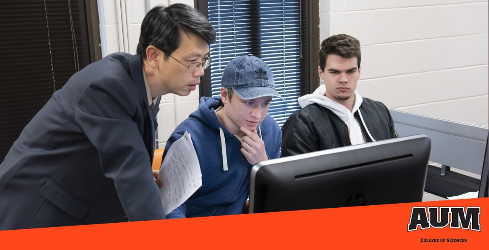

Apply for AUM - Apply Now
Apply for AUM - Apply Now
AUM was established in 1967 by Act 403 of the Alabama Legislature. In March 1968, Dr. H. Hanly Funderburk, Jr., was appointed vice president and chief administrator of the newly created university. AUM opened its doors in September 1969 with nearly 600 students in the old Alabama Extension Center on Bell Street, next to Maxwell AFB. Two years later, the university relocated to a 500-acre (2.0 km2) campus on the McLemore Plantation tract, 7 miles (11 km) east of downtown Montgomery. The campus' first two buildings were the Administration/Library building and Goodwyn Hall with classrooms and faculty offices.
Auburn University at Montgomery earned recognition from U.S. News and World Report and Princeton Review for the quality of its academic programs in 2018. U.S. News ranked AUM 22nd among regional universities in the South for the quality of its undergraduate teaching and 38th among public comprehensive universities in the South.
For the 2018-19 academic year, AUM enrolled 4,632 undergraduate and 579 graduate students. The student body is 65 percent female and 34 percent male. Forty-five percent of students are white, 40 percent are black, 2 percent are Asian, 1 percent are Hispanic, and 5 percent are international students. AUM comprises five Colleges (Business, Education, Nursing and Health Sciences, Liberal Arts and Social Sciences, and Sciences) that offer bachelor, master and specialist degree programs. The most popular bachelor's degrees granted are business administration, nursing, liberal arts, biology, elementary education and secondary education. The university's nursing and medical laboratory sciences programs boast placement rates of more than 90 percent. AUM offers a joint doctorate program with Auburn University in Public Administration, and now offers a Doctor of Nursing Practice degree.
AUM has a continuing education program that enrolls over 10,000 students annually. Continuing Education curricula include certificate programs, corporate education, community education, computer training, languages (including English as a Foreign or Second Language), online training, and youth programs.
AUM's College of Business ranks in the top 5% of business schools in the world, as accredited by The Association to Advance Collegiate Schools of Business International, and was rated a "Best Business School" by The Princeton Review.